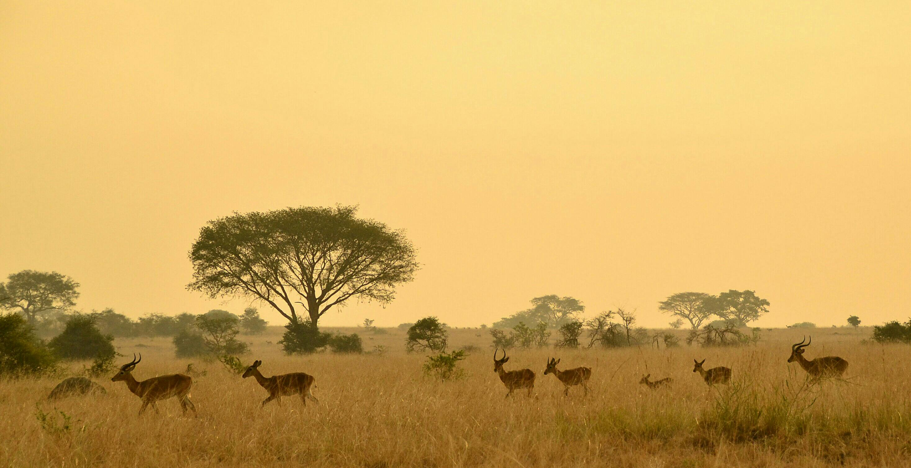
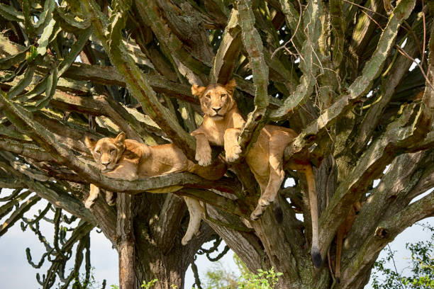
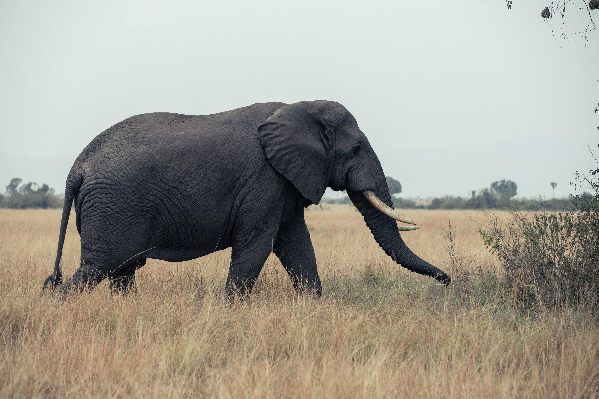
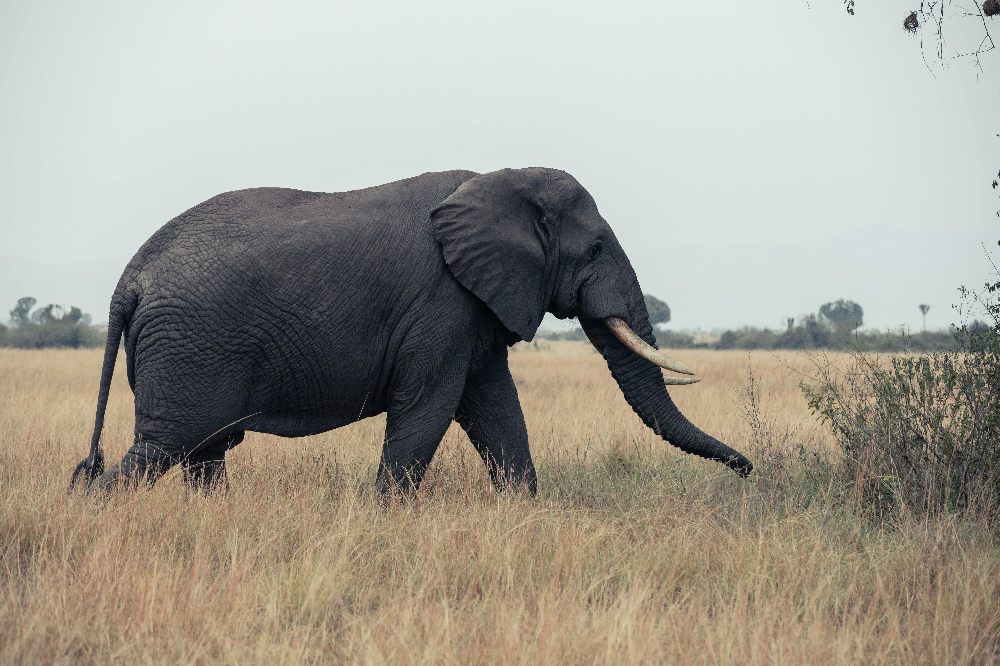

Murchison Waterfalls


Murchison Falls, also known as Kabalega Falls, is a waterfall in Uganda, located at the apex of Lake Albert on the White Nile. At the top of Murchison Falls, the Nile forces its way through a gap in the rocks, only 7 m (23 ft) wide, and tumbles 43 m (141 ft), before flowing westward into Lake Albert. The outlet of Lake Victoria sends around 300 m3/s (11,000 cu ft/s) of water over the falls, squeezed into a gorge less than 10 m (33 ft) wide.
Queen Elizabeth National park

 


QENP, together with the adjacent Virunga National Park, was designated as a 'lion conservation unit' by the IUCN in 2006.[18] The area is also considered a potential lion stronghold in Central Africa, if poaching is curbed and prey species are allowed to recover.[19] The resident lion population (including hyenas and leopards) are actively monitored by the Uganda Carnivore Program and the Uganda Wildlife Authority through the use of radio collars and other conservation initiatives.[20]
The park is also famous for its volcanic features, including volcanic cones and deep craters, many with crater lakes, such as the Katwe craters,